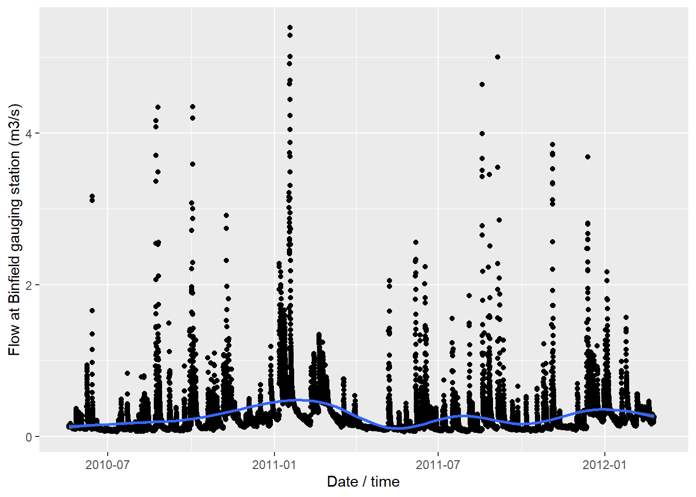
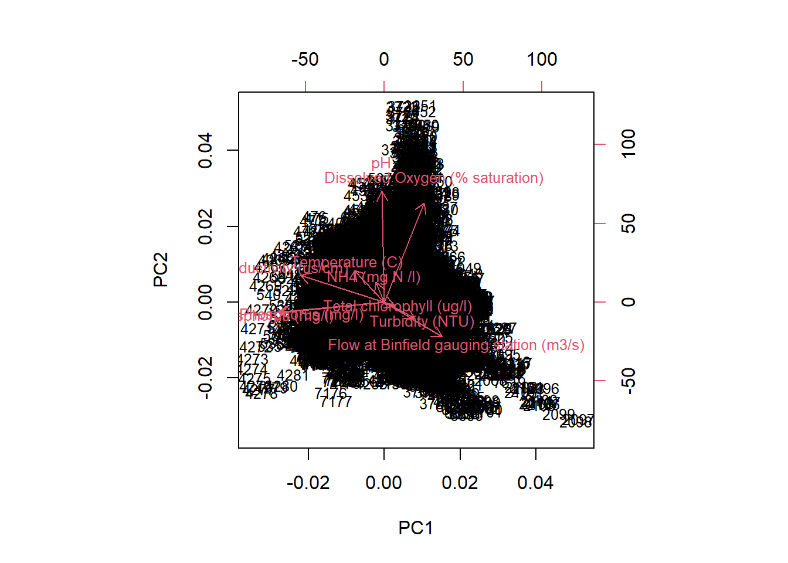
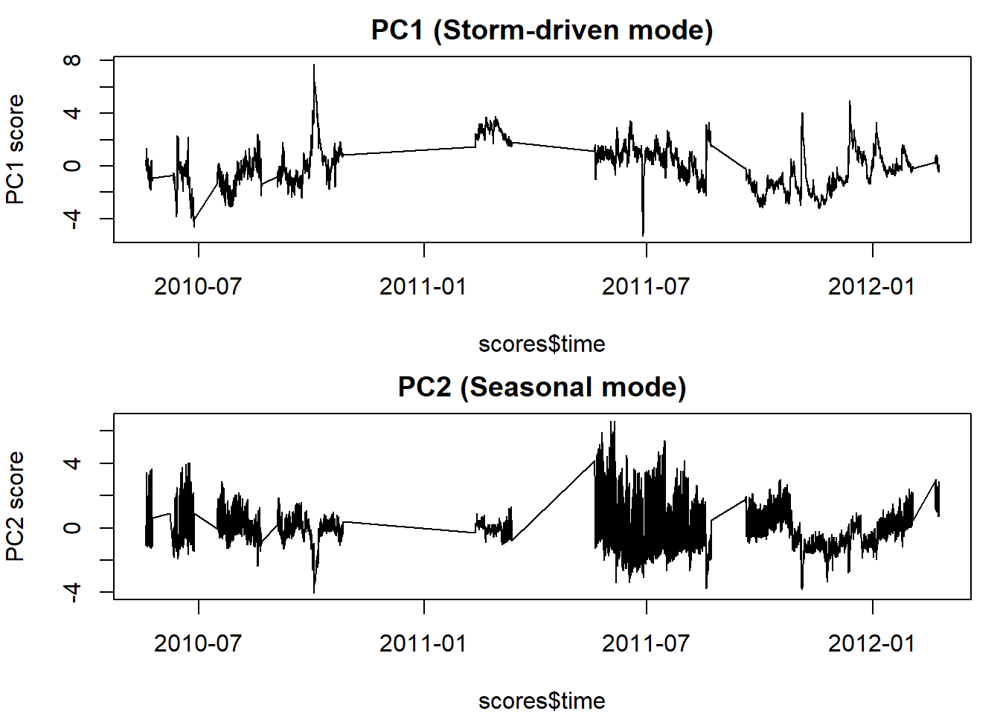
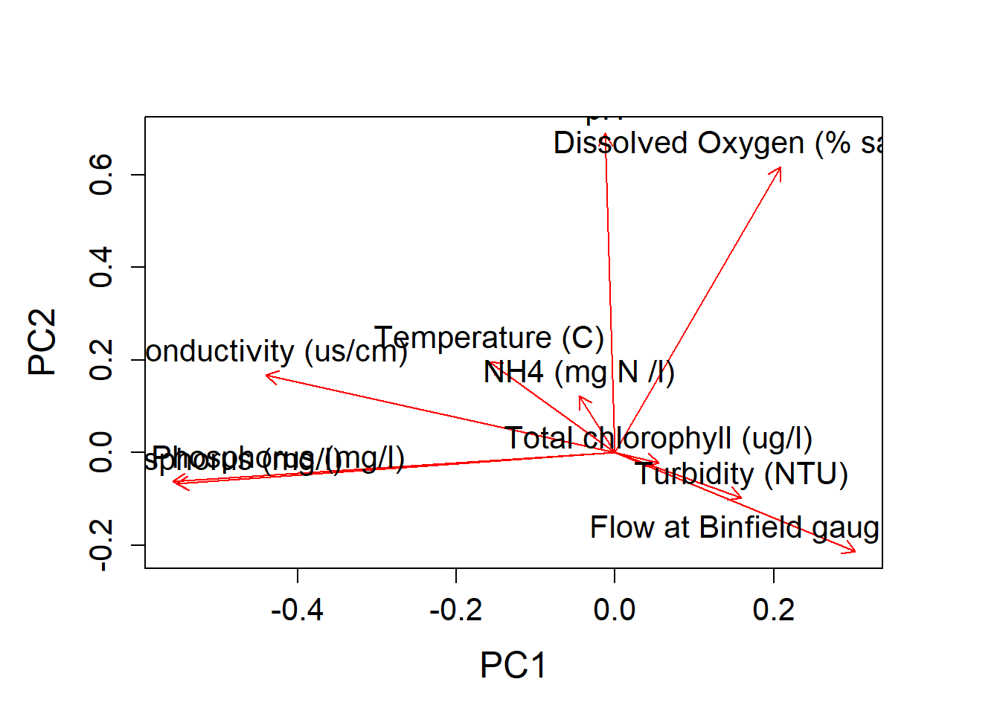
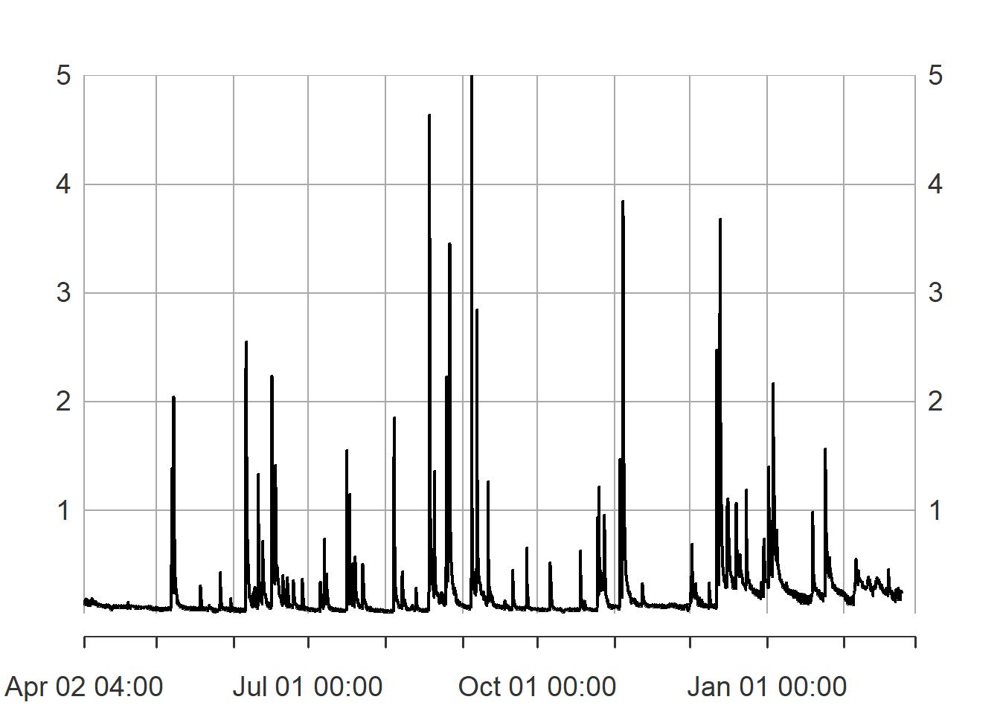
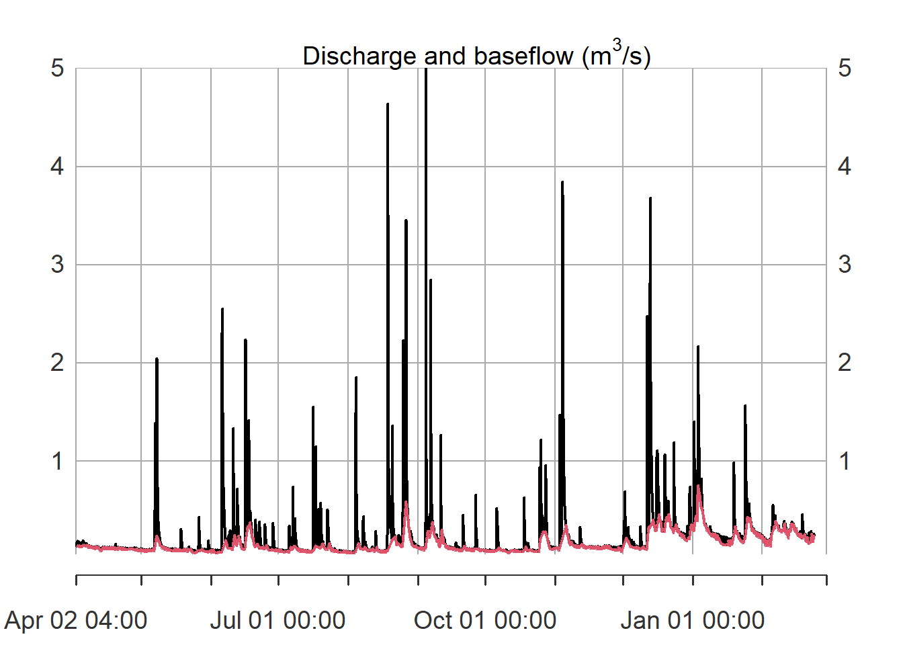
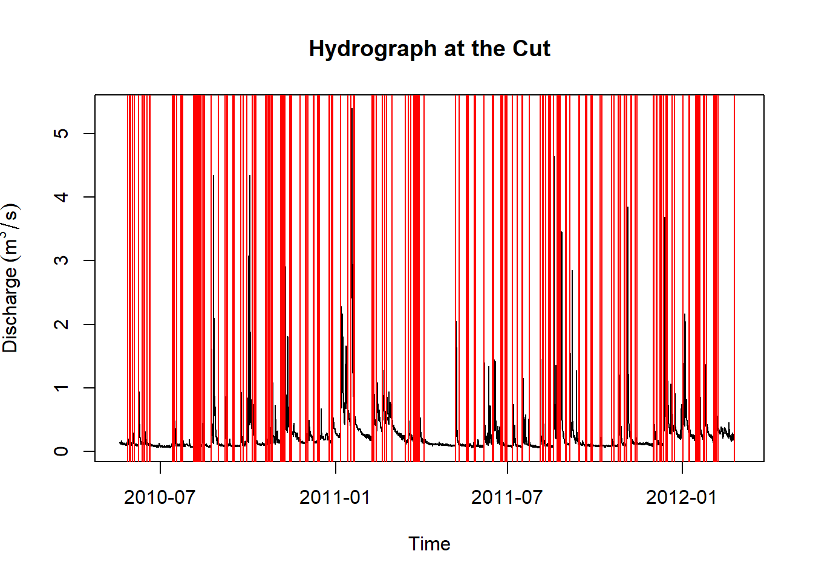
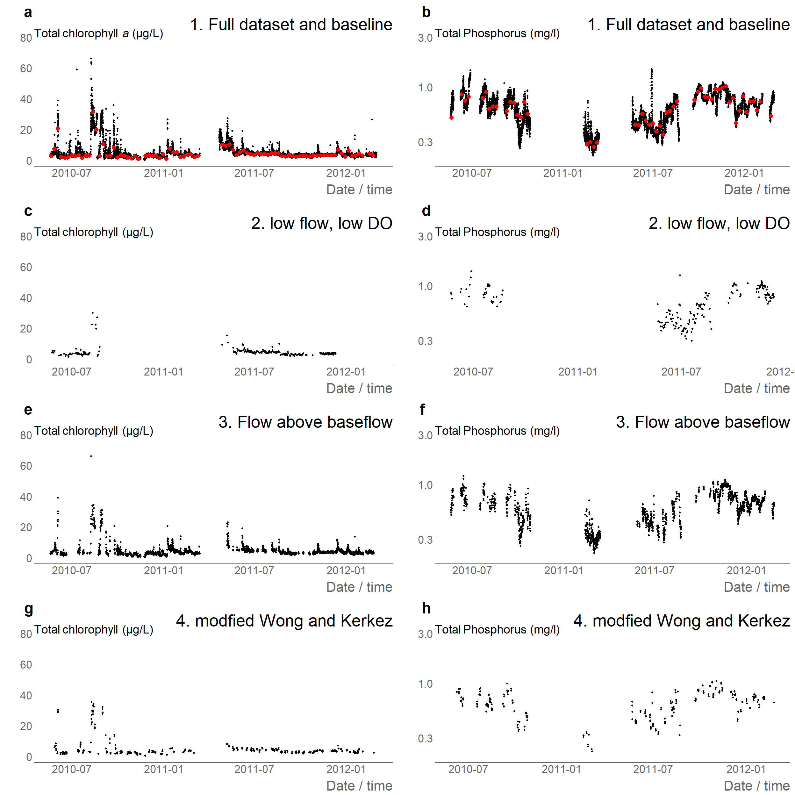

library(readr)
library(ggplot2)
library(tidyr)
library(dplyr)
library(lubridate)
library(cowplot)
library(lfstat) # baseflow separation
# devtools::load_all() # to replace with library(adaptNP)
library(adaptNP)
# source('temp/theme_gov.R') # optional theming for plots, included in package
# source('../temp/state_machine.R') # included in packageRiver water quality example: The Cut, UK
The data used for demonstration in this notebook is included in the R package.
Please cite: Bowes, M.J.; Gozzard, E.; Newman, J.; Loewenthal, M.; Halliday, S.; Skeffington, R.A.; Jarvie, H.P.; Wade, A.; Palmer-Felgate, E. (2015). Hourly physical and nutrient monitoring data for The Cut, Berkshire (2010-2012). NERC Environmental Information Data Centre. https://doi.org/10.5285/abe4dd7c-a340-4595-a57f-8c1446ff7656
# TheCutData = read_csv('temp/HighFrequencyWQ_TheCut.csv') |>
# mutate(`Date / time` = parse_datetime(`Date / time`, "%d/%m/%Y %H:%M"))
# ggplot(TheCutData |>
# pivot_longer(!`Date / time`, names_to = "FIELDNAME", values_to = "VALUE"),
# aes(`Date / time`, VALUE)) +
# geom_point() +
# geom_smooth() +
# facet_wrap(vars(FIELDNAME), scales = "free")
ggplot(TheCutData,
aes(`Date / time`, `Flow at Binfield gauging station (m3/s)`)) +
geom_point() +
geom_smooth() 
Principal component analysis
library(stats)
set.seed(123)
keep <- complete.cases(TheCutData[ , -1]) # exclude time column
X <- scale(TheCutData[keep,-1]) #remove time, scale variables
pca <- prcomp(X, center = TRUE, scale. = TRUE)
summary(pca)Importance of components:
PC1 PC2 PC3 PC4 PC5 PC6 PC7 PC8
Standard deviation 1.600 1.353 1.1840 1.0857 1.0235 0.8608 0.78387 0.7057
Proportion of Variance 0.256 0.183 0.1402 0.1179 0.1048 0.0741 0.06144 0.0498
Cumulative Proportion 0.256 0.439 0.5792 0.6970 0.8018 0.8759 0.93736 0.9872
PC9 PC10
Standard deviation 0.34890 0.08160
Proportion of Variance 0.01217 0.00067
Cumulative Proportion 0.99933 1.00000
pca_var <- pca$sdev^2
pca_var / sum(pca_var) [1] 0.2559492795 0.1830394842 0.1401837840 0.1178767949 0.1047612559
[6] 0.0741026878 0.0614445980 0.0498034466 0.0121728376 0.0006658314
round(pca$rotation, 2) # loadings (what each PC represents) PC1 PC2 PC3 PC4 PC5 PC6
Flow at Binfield gauging station (m3/s) 0.30 -0.21 0.25 -0.35 -0.20 -0.60
Total Reactive Phosphorus (mg/l) -0.56 -0.06 0.18 -0.31 -0.11 -0.08
Total Phosphorus (mg/l) -0.55 -0.07 0.15 -0.34 -0.11 -0.10
Conductivity (us/cm) -0.44 0.17 0.02 0.33 -0.06 0.05
Turbidity (NTU) 0.16 -0.10 -0.20 -0.42 -0.60 0.58
Total chlorophyll (ug/l) 0.05 -0.02 -0.30 -0.53 0.59 -0.05
Dissolved Oxygen (% saturation) 0.21 0.62 0.22 -0.16 -0.12 -0.04
pH -0.01 0.69 0.14 -0.18 0.02 0.00
Temperature (C) -0.16 0.20 -0.61 -0.13 0.13 0.01
NH4 (mg N /l) -0.05 0.12 -0.55 0.14 -0.45 -0.53
PC7 PC8 PC9 PC10
Flow at Binfield gauging station (m3/s) -0.18 -0.49 -0.04 -0.01
Total Reactive Phosphorus (mg/l) -0.05 0.17 -0.01 -0.71
Total Phosphorus (mg/l) -0.03 0.18 -0.03 0.70
Conductivity (us/cm) 0.33 -0.70 -0.25 0.01
Turbidity (NTU) 0.14 -0.18 0.02 -0.01
Total chlorophyll (ug/l) 0.51 -0.08 -0.07 -0.02
Dissolved Oxygen (% saturation) 0.06 0.22 -0.66 -0.01
pH -0.03 -0.16 0.67 0.02
Temperature (C) -0.67 -0.19 -0.19 -0.01
NH4 (mg N /l) 0.34 0.23 0.10 -0.02
biplot(pca, cex = 0.8)
# PCA scores as time series (key step)
scores <- as.data.frame(pca$x)
scores$time <- TheCutData$`Date / time`[keep]
par(mfrow = c(2,1), mar = c(4,4,2,1))
plot(scores$time, scores$PC1, type = "l",
ylab = "PC1 score", main = "PC1 (Storm-driven mode)")
plot(scores$time, scores$PC2, type = "l",
ylab = "PC2 score", main = "PC2 (Seasonal mode)")
## plot scores only
# plot(
# pca$x[, 1],
# pca$x[, 2],
# pch = 16,
# col = rgb(0, 0, 0, 0.2),
# xlab = "PC1",
# ylab = "PC2"
# )
par(mfrow = c(1,1), mar = c(4,4,2,1))
## plot loadings only
plot(
pca$rotation[, 1],
pca$rotation[, 2],
type = "n",
xlab = "PC1",
ylab = "PC2"
)
arrows(
0, 0,
pca$rotation[, 1],
pca$rotation[, 2],
length = 0.1,
col = "red"
)
text(
pca$rotation[, 1],
pca$rotation[, 2],
labels = rownames(pca$rotation),
pos = 3
)
Baseflow separation
TheCutDataXTS <- as.xts(TheCutData |> rename(discharge = `Flow at Binfield gauging station (m3/s)`) |> tail(8000) )
TheCutDataXTS$baseflow <- baseflow(TheCutDataXTS$discharge)
TheCutDataXTS$bf_turning <- (TheCutDataXTS$baseflow == TheCutDataXTS$discharge)
# this method gives 1000+ turning points
index(TheCutDataXTS[TheCutDataXTS$bf_turning==1]) |> length()[1] 1559
plot(TheCutDataXTS$discharge, type = "l")
lines(TheCutDataXTS$baseflow, col = 2)
abline(a=NULL,b=NULL,h=NULL,v=index(TheCutDataXTS[TheCutDataXTS$bf_turning==1]), col="red") 
median(TheCutDataXTS$baseflow, na.rm=TRUE)[1] 0.1215556
# lf <- createlfobj(
# h = as.numeric(x[, 1]),
# dates = as.POSIXct(index(x)),
# idh = "Station_1"
# )Samples rules: Driven by flow: 1. Baseflow: every week >> sample everything 1. Low flow/algal flush + favourable DO: every day >> sample cholorophyll 1. Track hydrograph: hourly or 3 hourly TP above baseflow (median) 1. High flow for load: track hydrograph like Wong and Kerkez >> 6 points >> TP, assume perfect knowledge of storm coming
# 1. Baseflow: every week at 1500>> sample everything
baseline <- TheCutData |>
mutate(hour = lubridate::hour(`Date / time`), dayofweek = lubridate::wday(`Date / time`)) |>
filter(dayofweek==4, hour %in% c(15))
# 2. Low flow/algal flush + favourable temperature: every day >> sample cholorophyll
criteria <-"(`Flow at Binfield gauging station (m3/s)` < 1.0) & (`Dissolved Oxygen (% saturation)` < 60)"
TheCutData <- flag_event(TheCutData,criteria)
periods <- extract_event_periods(
TheCutData %>%
rename(timestamp=`Date / time`,flag=event_flag) |> tidyr::drop_na(flag),
min_length=5)
# convert period to R lubridate intervals
intervals <- periods |>
mutate(int = lubridate::interval(start,end) ) |>
pull(int)
# intervals
# very fast!
mask <- Reduce(`|`, lapply(intervals, function(int) TheCutData$`Date / time` %within% int))
rule_low_DO <- TheCutData[mask, ] |>
mutate(hour = lubridate::hour(`Date / time`)) |>
filter( hour %in% c(18))Track hydrograph: hourly or 3 hourly TP above baseflow (median)
High flow for load: track hydrograph like Wong and Kerkez >> 6 points >> TP, assume perfect knowledge of storm coming
# 3. Track hydrograph: hourly or 3 hourly TP above baseflow (median)
criteria <-"(`Flow at Binfield gauging station (m3/s)` > 0.122)"
TheCutData <- flag_event(TheCutData,criteria)
periods <- extract_event_periods(
TheCutData %>%
rename(timestamp=`Date / time`,flag=event_flag) |> tidyr::drop_na(flag),
min_length=5)
# convert period to R lubridate intervals
intervals <- periods |>
mutate(int = lubridate::interval(start,end) ) |>
pull(int)
# intervals
# very fast!
mask <- Reduce(`|`, lapply(intervals, function(int) TheCutData$`Date / time` %within% int))
rule_above_baseflow <- TheCutData[mask, ]|>
mutate(hour = lubridate::hour(`Date / time`)) |>
filter(hour %in% c(0,3,6,9,12,15,18,21))Adaptive sampling using Wong and Kerkez (2016) algorithm
The Wong and Kerkez (2016, https://doi.org/10.1002/2015WR018013) algorithm uses a state machine to capture six to points in a flow hydrograph. 1. base flow conditions right before a storm, 2. the onset of the hydrograph to detect a potential first flush, 3. the inflection-point of the rising limb of the hydrograph 4. the peak of the hydrograph 5. theinflection-point of the falling limb of the hydrograph, 6. the falling limb of the hydrograph as it returns to within 10% of the prestorm base flow.

RBI = sum(abs(diff(TheCutData$`Flow at Binfield gauging station (m3/s)`)), na.rm=TRUE)/sum(TheCutData$`Flow at Binfield gauging station (m3/s)`, na.rm=TRUE)
print(paste('The Richards-Baker Flashiness Index (RBI) of the station is', RBI))[1] "The Richards-Baker Flashiness Index (RBI) of the station is 0.0740844425526265"::: {.cell}
# parameters
params <- list(
# forecast_prob_thresh = 0.10, # 10% POP
# forecast_rain_thresh = 5, # mm/hour
event_frac_thresh <- 0.25, # 25% above baseflow
onset_slope_thresh = 7.5 / 5 /10 , # m3/s per min (paper value), may reduce to 0.05
baseflow_tol_frac = 0.01, # 10% of baseflow
eps = 1e-4 # 1e-2 or 1e-6
)
flow_state = run_state_machine(
TheCutData$`Date / time`,
TheCutData$`Flow at Binfield gauging station (m3/s)`,
params = params)
flow_state |> head()::: {.cell-output .cell-output-stdout}
time state
1 2010-05-27 01:00:00 ONSET
2 2010-05-27 11:00:00 RISING_INFLECTION
3 2010-05-29 11:00:00 PEAK
4 2010-05-29 17:00:00 FALLING_INFLECTION
5 2010-05-30 10:00:00 RETURN_TO_BASEFLOW
6 2010-05-30 11:00:00 BASEFLOW:::
nrow(flow_state)::: {.cell-output .cell-output-stdout}
[1] 418:::
plot(
TheCutData$`Date / time`,
TheCutData$`Flow at Binfield gauging station (m3/s)`,
type = "l",
xlab = "Time",
ylab = expression(Discharge~(m^3/s)),
main = "Hydrograph at the Cut"
)
# abline(h = baseflow, col = "gray", lty = 2)
abline(a=NULL,b=NULL,h=NULL,v=flow_state$time, col="red") ::: {.cell-output-display}

:::
# very fast!
times = flow_state$time
# subset data by mask, note use %in% for exact time, %within% for intervals
mask <- Reduce(`|`, lapply(times, function(int) TheCutData$`Date / time` %in% int))
rule_state_machine <- TheCutData[mask, ]:::
# plot flow, and chlrophyll and P for all 4 rules
size = 0.75
sm_title = theme(plot.title = element_text(size = 20, face = "plain")) +
theme(plot.subtitle=element_text(size=14, hjust=0.0, vjust=-0.0,
margin = margin(t = -10, b = -10)), face="plain", color="black")
# TOCA
pTOCA1 = ggplot() +
geom_point(data=TheCutData,aes(x=`Date / time`, y=`Total chlorophyll (ug/l)`), size=size) +
geom_point(data=baseline, aes(x=`Date / time`, y=`Total chlorophyll (ug/l)`), color= 'red' ,size=2)+
theme_gov()+ ylab('') + ggtitle('1. Full dataset and baseline', subtitle = 'Total chlorophyll (ug/l)') + ylim(0,80) + sm_title
pTOCA2 = ggplot(rule_low_DO) + geom_point(aes(`Date / time`, `Total chlorophyll (ug/l)`), size=size) +
theme_gov()+ ylab('') + ggtitle('2. low flow, low DO', subtitle = 'Total chlorophyll (ug/l)') + ylim(0,80) + xlim(range(TheCutData$`Date / time`))+ sm_title
pTOCA3 = ggplot(rule_above_baseflow) + geom_point(aes(`Date / time`, `Total chlorophyll (ug/l)`), size=size) + theme_gov()+ ylab('') + ggtitle('3. Flow above baseflow', subtitle = 'Total chlorophyll (ug/l)') + ylim(0,80) + xlim(range(TheCutData$`Date / time`)) + sm_title
pTOCA4 = ggplot(rule_state_machine) + geom_point(aes(`Date / time`, `Total chlorophyll (ug/l)`), size=size) +
theme_gov()+ ylab('') + ggtitle('4. modfied Wong and Kerkez', subtitle = 'Total chlorophyll (ug/l)') + ylim(0,80) + xlim(range(TheCutData$`Date / time`)) + sm_title
# total P
pTP1 = ggplot() +
geom_point(data=TheCutData,aes(x=`Date / time`, y=`Total Phosphorus (mg/l)`), size=size) +
geom_point(data=baseline, aes(x=`Date / time`, y=`Total Phosphorus (mg/l)`), color= 'red' ,size=2)+ theme_gov()+ ylab('') + sm_title +
ggtitle('1. Full dataset and baseline', subtitle = 'Total Phosphorus (mg/l)') +
scale_y_continuous(trans='log10', limits = c(0.2,3))
pTP2 = ggplot(rule_low_DO) +
geom_point(aes(`Date / time`, `Total Phosphorus (mg/l)`), size=size) +
theme_gov()+ ylab('') + sm_title +
ggtitle('2. low flow, low DO', subtitle = 'Total Phosphorus (mg/l)') +
scale_y_continuous(trans='log10', limits = c(0.2,3))
pTP3 = ggplot(rule_above_baseflow) +
geom_point(aes(`Date / time`, `Total Phosphorus (mg/l)`), size=size) +
theme_gov()+ ylab('') + sm_title +
ggtitle('3. Flow above baseflow', subtitle = 'Total Phosphorus (mg/l)') +
scale_y_continuous(trans='log10', limits = c(0.2,3))
pTP4 = ggplot(rule_state_machine) +
geom_point(aes(`Date / time`, `Total Phosphorus (mg/l)`), size=size) +
theme_gov()+ ylab('') + sm_title +
ggtitle('4. modfied Wong and Kerkez', subtitle = 'Total Phosphorus (mg/l)') +
scale_y_continuous(trans='log10', limits = c(0.2,3))
# plot_grid(
# pTOCA1,pTOCA2,pTOCA3,pTOCA4,
# labels = "auto", ncol = 1, label_x = 0.05
# )
# # size 1000 x 750 or 1000x 1000
plot_grid(
pTOCA1,pTOCA2,pTOCA3,pTOCA4, pTP1,pTP2,pTP3,pTP4,
labels = letters[c(1,3,5,7,2,4,6,8)],label_x = 0.05,ncol=2, byrow = FALSE, label_size = 18
)
# print(pTOCA1)
# print(pTOCA2)
# print(pTOCA3)
# print(pTOCA4)
# print(pTP1)
# print(pTP2)
# print(pTP3)
# print(pTP4)
# plot_grid(p1,p2,ncol=2)
a = diff(range(TheCutData$`Total Phosphorus (mg/l)`, na.rm = TRUE))
diff(range(baseline$`Total Phosphorus (mg/l)`, na.rm = TRUE)) /a[1] 0.6[1] 0.312253[1] 0.7818182[1] 0.6561265
b = median(TheCutData$`Total Phosphorus (mg/l)`, na.rm = TRUE)
(median(baseline$`Total Phosphorus (mg/l)`, na.rm = TRUE) -b) /b [1] -0.008358663
(median(rule_low_DO$`Total Phosphorus (mg/l)`, na.rm = TRUE) -b) /b [1] 0.2431611
(median(rule_above_baseflow$`Total Phosphorus (mg/l)`, na.rm = TRUE) -b) /b [1] -0.07218845
(median(rule_state_machine$`Total Phosphorus (mg/l)`, na.rm = TRUE) -b) /b [1] 0.02279635
a = diff(range(TheCutData$`Total chlorophyll (ug/l)`, na.rm = TRUE))
diff(range(baseline$`Total chlorophyll (ug/l)`, na.rm = TRUE)) /a[1] 0.3275862[1] 0.01400862[1] 0.7090517[1] 0.3782328
b = median(TheCutData$`Total chlorophyll (ug/l)`, na.rm = TRUE)
(median(baseline$`Total chlorophyll (ug/l)`, na.rm = TRUE) -b) /b [1] -0.05882353
(median(rule_low_DO$`Total chlorophyll (ug/l)`, na.rm = TRUE) -b) /b [1] -0.05882353
(median(rule_above_baseflow$`Total chlorophyll (ug/l)`, na.rm = TRUE) -b) /b [1] 0
(median(rule_state_machine$`Total chlorophyll (ug/l)`, na.rm = TRUE) -b) /b [1] -0.02941176
# ## plot flow and PCA loadings
# ## plot loadings only
# p3 <- ~plot(
# pca$rotation[, 1],
# pca$rotation[, 2],
# type = "n",
# xlab = "PC1",
# ylab = "PC2"
# )
# arrows(
# 0, 0,
# pca$rotation[, 1],
# pca$rotation[, 2],
# length = 0.1,
# col = "red"
# )
# text(
# pca$rotation[, 1],
# pca$rotation[, 2],
# labels = rownames(pca$rotation),
# pos = 3
# )